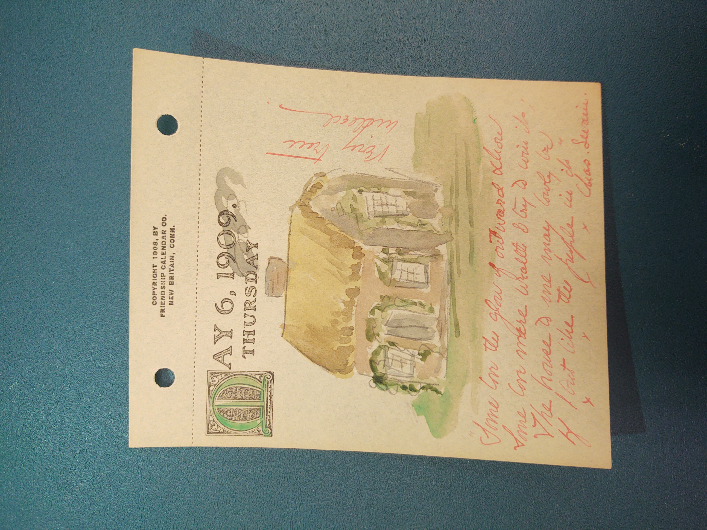

Drawing of a house with grass around it, as well
as smoke coming out of the chimney—#zmurphy
May 06, 1909. Thursday
"Some love the glow of outward show Some love mere wealth and try
to win it The house to me may lovely be If I but like the people in
it" Chaz Levain
Very true indeed
This shows that Mary loves the people that consist of her
household and loves her house because of that.—#zmurphy